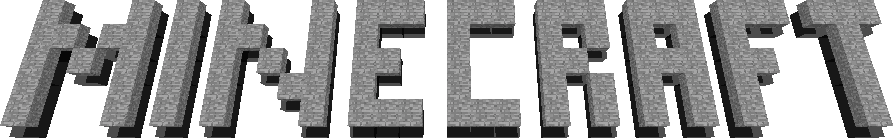

Alpha 1.2.3_ 06 Minecraft technology test
Minecraft Alpha 1.2.3_06 представляет собой специальную версию, основанную на Minecraft Alpha 1.2.3.В сущности, это внутренний технический тест minecraft, используемый для тестирования продвинутых OpenGL и 64 - битного Java.его игровое содержание аналогично содержанию alpha1.2.3 × u 04, предыдущая версия, так как первый раз был использован расширенный OpenGL, не может быть хорошо адаптирован ко всем системам, поэтому мы передали его другим командам, чтобы адаптировать его
Последнее обновление : 2021/7/9 11:00
Внимание: для этой версии Minecraft требуется 64 - битная Ява.
не можешь бежать?не знаю, как бежать? просмотреть документ